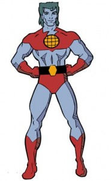

It has this crappy DRM that only lets me view the pdf on one computer using only “Adobe Digital Editions”.
If that wasn’t so bad, only a small subset of the text is OCR’d, so most of it isn’t even searchable!
Now I’m pissed, but wait, what do you say? These files are just RSA encrypted, and I have the key?
Some cool guy named **i♥cabbages **has released code do extract your key, and then decrypt the file to a good ol’ plain pdf. If you want to reproduce my steps you will need to use the PDF decrypter unless you have epubs.
So I use the tool and get a pdf, now I can use one of the most awesome tools in the world: Imagemagick.
Imagemagick can whip this pdf into shape. The first thing I’m going to do is convert each page into a tiff:
Then I’m going to run tesseract-ocr on them to get the text:
$ for i in $(seq --format=%005.f 1 324)
do
tesseract $i.tif tesseract-$i -l eng
done
Now all I have to do is cat all the text together:
cat *.txt > output.txt
Now I have a fully searchable, plain text file. Exactly what I wanted in the first place!
For the REAL magic, I use agrep to search for strings similar to provided example test questions to help “highlight” the answers. More technical details on that magic on my wiki.
I’ve become a semi-expert on wireless networking and their security features.. and how to get around them. Before I continue I want to emphasize:
The act of cracking encryption is not illegal just like picking a lock is not illegal. It is the unauthorized access of that network which is illegal, just like breaking and entering is illegal.
So. To sum it up, there are two types of encryption. There is the weak kind (wep) and the strong kind (wpa). WEP can be broken in about 5-10 minutes. WPA can be broken in about 24 hours (as long as their password is in your password try-out list).
The actual process or hacking into a network like this requires a suite of tools called the aircrack-ng suite. You can read their tutorials and such, and I highly recommend you do if you want to get into this sort of thing. It’s a lot of FUN! Be prepared to learn linux while you are at it….
But, once you understand what you are doing, you will appreciate the tool I have written. It automates the process of getting the keys. I wrote it as a type of “set-it-and-forget-it” tool that I could just leave running. It isn’t too clean, but if you can read bash scripting you can figure it out.
[caption id="attachment_137” align="aligncenter” width="500” caption="Here is a screen shot of my tool cracking wep”][/caption]
Remember! Don’t try to just run this tool without understanding what it does and how to read it. If you haven’t breaking a wep key manually you don’t want to run this. It does WEP and WPA cracking (saving the handshake for later). Good luck! I will provide minimal support via comments on this post. Don’t forget to have your radio in monitor mode first, and if you are going to do wpa you need the mdk3 tool.
This semester I took a class on Discrete Wavelets. It was awesome. The coolest part was our group final project. My group had the best topic by far: Decoding a Captcha! (Click on any of the following images to view them full size)
[](/uploads/file_captcha.jpg)
We’ve all seen Captchas before. They are used on websites to make sure that the person on the website is a real human, not a computer program. Why do we want to break them? The same reason we want to climb Mount Everest, it’s There!
The above is the captcha we intended to solve. Its not particularly difficult, but this class is an introduction to wavelets and requires no previous experience with the language we had to use: Mathematica. Our real task was to implement the algorithm in this paper.
So how do we do it? First we need to isolate the image without the background.
No problem. The color of the text is different from the background so it is easy to isolate. Next we need to take those pieces of the matrix and turn them into a list of coordinate pairs. Then we can apply a rotation matrix transform to undo the angle. What angle? Well I don’t know. How can we figure out how much it was rotate? Of course! Linear regression from Statistics!
Fortunately Mathematica has a function for this. This is the easy part. Now we need to take these rotated vectors and “Unrotate” them, then put them back into a matrix:
No problem! Well actually this isn’t as easy as it sounds. Arbitrary image rotation is non trivial. But let us press on. Now we must Cut the image into its component letters. This is easy, the columns of the matrix that are all white are the demarcation points.
Ok now what? Well we have an individual matrix for each unknown letter. Let us resize it to a standard square size (pad it), say 80x80. Oh I forgot to mention, before we stared on this we made a “Canon” of letters from A-Z0-9 with the same font into 80x80 squares too. At this point we could compare each letters “difference” and see which has the least difference. Let me show you:
Eh so that is a crappy example. When you take two letters and subtract them, you get all black where they are the same, and some white or gray where the “differences” are (Math terms=2 dimensional norm). The letter with the least difference is most likely to be the original letter.
So all we have to do is iterate through each canonical letter until we get the least difference. Do that for each letter and we can decode (you can see the unknown on the left, and the matching canon on the right):
Seems pretty good. But it gets better with some Discrete Wavelet Magic! Our comparison can get even better if we ignore the errors and wavey crap that was introduced in the align section. The way we do this is with the Haar Wavelet Transform. Don’t mind the math, we are basically blurring the image:
The part we want is in the upper most left hand corner, the “blur”. It turns out that 3 iterations of the HWT gives the best results. By doing this we were able to decode our CAPTCHAs 75% of the time. In the end the major flaws take place in the linear regression and the align function. If we used Mathematica 7 instead of 6 we could have used its built in image processing functions to take the error out of our sloppy rounding.
But of course, the proof is in the code, I mean, the pudding. Here is our notebook:
More Update: There are new AP’s that don’t conform to this pattern. If the calculator doesn’t work on yours, maybe it is like these non-conforming-wep keys
Update: A cool cool guy named Dylan Taylor wrote a java implementation of this script: http://www.fwc.dylanmtaylor.com/ if you need an offline version
Update: I wrote a bash implementation to make it easy to script, and for offline usage
In my previous post I showed a correlation between the WEP key of a Verizon FiOS install and the MAC address of the access point. This was simply a collection of experimental data that I gathered.
Thanks to Fred Williams? for pointing out the correlation between the ESSID and the WEP. With these powers combined form:

Well.. Not exactly. If there was a super hero with the phrase: “Hack the Planet” instead of “Save the Planet” I would have chosen it.
So what is the deal?
The first part of the key is a combination of the second and third part of the MAC, which is either 1801 or 1F90.
The second part of the key is this forumula.. hold on to your butts:
The 5-character SSID name is a base-36 number of the lower 48 bits (6 hex digits) of the WEP key. The string is reversed, with the most significant digit on the right.
Base-36 numbers uses 0-9 followed A-Z to represent 36 digits (0123456789ABCDEFGHIJKLMNOPQRSTUVWXYZ)
It maps out like this:
To go through an example, the SSID name of “E3X12″ comes out as follows.
E*(36^0) is 14 * 1 = 14
3*(36^1) is 03 * 36 = 108
X*(36^2) is 33 * 1296 = 42,768
1*(36^3) is 01 * 46656 = 46,656
2*(36^4) is 02 * 1679616 = 3,359,232
Add these up, and you get 3,448,778 decimal which is 349FCA in Hexadecimal notation.
The first 4 hex digits of the WEP key are the 2nd and 3rd byte from the MAC address as indicated in the original post above.
Thanks again Fred! To math majors this is like a beam of light coming down from the heavens
So I wrote this Javascript calculator (my first javascript program actually) in order to aid the calculation of the keys! Just type in your neighbor’s ESSID and out comes the KEY!
(Sorry about the iframe if that is an issue to you. Goto here if it is.)
Your browser does not support iframes.
Want to try it out? Here is a list of keys I’ve collected in my travels. Theres are cracked with Aircrack-ng, not calculated.
I suppose I come from a… short line of engineers. My father used to work for Paradyne which was gobbled up by At&t, and is now owned by Zhone.
But back in the day they worked on “Terminals". You know, back when “Computers” has a gazillion serial ports and the “Terminal” was the box that had a monitor and keyboard which parsed the 300baud green text? Yea neither do I…
But I’ve read about such times, and I know about the history of my xterm and picocom programs. They emulate these devices. Such devices that my Dad (Richard Anderson) designed! It is good to know your roots. Amazing:
A couple of years ago, a large list of phished Myspace accounts was leaked on the internet.
I stumpled upon them and ran a very simple analysis. Check it out:
The file was in the form of “Username:password”, so the first part of that command “cuts” the second column, with the colon as the delimiter. Then it is piped through sort, which sorts the list alphabetcially, then the uniq -c command, which counts the number of times that a word shows up, then I sort it again to get the most freqent passwords, and tail the last 20 lines.
It is interesting to see that a lot of these passwords just tack “1” on to them. And of course blink182 was all the rage back then aparently…
Notice the relationship the MAC and the key have. Let me split up the bytes for you:
00:18:01:FE:15:46 - 18:01:C1:B0:2B
Verizon, or Actiontec, or someone is setting the first byte of the 40bit key to the second byte of the MAC of the unit. And then they are setting the second byte of the key to the third byte of the MAC!
You can look on the list, and this is mostly the case, there is some overlap on the OIDs. (sometimess it is 1801, sometimes 1f90) Why is this useful? Well if you know it is a FiOS install, you have already decreased your “64bit” key to a real “40bit” key, and you already know 16 bits of it, so you only have to crack 24 bits. This is insane. This is like guessing 3 letters.
The way to use this is with the Aircrack-ng program. Capture some packets, and use the -d option to tell it what the key starts with.
aircrack-ng -d 1801 stupid-fios.cap
You will get the key in No time! Silly Verizon, you didn’t think we would notice you weren’t using constructed (not random) keys?
Have FiOS yourself? Want to share your MAC and default key in the comments? :)


{kind=link}
{kind=link}
{kind=link}
{kind=link}
{kind=link}
{kind=link}